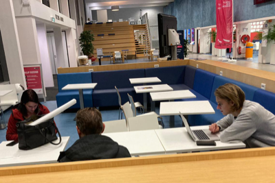

Data gedreven de energietransitie te lijf
Het team System Management bouwt aan IT oplossingen om Liander steeds beter te laten omgaan met de vele veranderingen door de Energietransitie. Als één van de initiatieven bouwt dit team aan applicaties om meetdata en events om te zetten naar slimme en geautomatiseerde bedrijfsprocessen. Binnen deze opdracht zul jij dus voor verschillende uitdagingen komen te staan op zowel technisch als ook functioneel niveau. Je zult hier met verschillende belanghebbende moeten afstemmen wat er precies functioneel benodigd is maar ook hoe de verschillende componenten technisch op elkaar aansluiten. Je zal hierbij natuurlijk ondersteund worden door een multiskilled team waar je onderdeel van uit zal maken zodat jij ook echt kan ervaren hoe het is om binnen Alliander werkzaam te zijn. Daarnaast is deze opdracht ook echt maatschappelijk relevant omdat het direct gerelateerd is aan de energie transitie aangezien men met deze data slimme oplossingen kan bouwen die congestie kan voorspellen en dus ook voorkomen.
 Bekijk